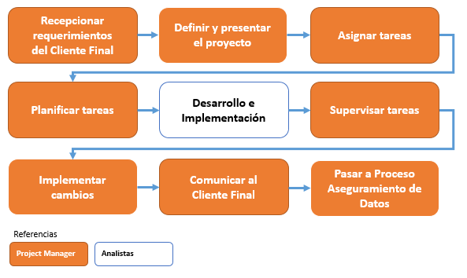

PROCESO DE REPORTES¶
1. OBJETIVO¶
El objetivo de este proceso es asegurar la “Presentación en tiempo de los informes mensuales a AMX y Dashboard de Capacidad”. La meta es entregar en tiempo el 95% de los reportes construídos durante el semestre. Como así también definir los roles de los colaboradores dentro del proceso.
2. ALCANCE¶
Alcanza a todo el equipo de Performance de Red y sus actividades de construir reportes, v alidar su consistencia, entregarlos al cliente final y dar soporte sobre los mismos.
3. DEFINICIONES¶
Reportes: se define como reportes a los gráficos y tablero de la herramienta web Smart, a los documentos Excel con gráficos y tableros, y otros documentos en formato Word y PowePoint. Los cuales contienen información de KPIs y Capacidad de la red de Claro. Enviados a los clientes finales en forma periódica y programada, o publicados en Sharepoint, como así también aquellos informes que surjen bajo demanda.
Smart: herramienta de performance de red, donde se almacenan y visualizan datos históricos de las diferentes plataformas integradas.
JIRA: herramienta web para registrar y dar seguimiento a los proyectos y tareas relacionadas a los mismos.
Analista de Performance: es la persona que se encarga de construir los reportes periódicos y enviarlos por correo al cliente final y/o publicarlo en Sharepoint. Ante cualquier duda sobre la información obtenida en el reporte, lo debe consultar al Focal Point.
Focal Point: es un rol que se asigna a un colaborador durante el sprint para asegurar la construcción y envío de los reportes. Las responsabilidades del rol son:
- Tener una visibilidad general de los reportes construídos y comunicados por el área.
- Controlar la construcción de los reportes periódicos por parte de los analistas de performance y registrarlo.
- Validar la consistencia de los reportes periódicos y los nuevos reportes en caso que surjan dudas por parte de los analistas de performance.
- Asegurar el envío y/o publicación en Sharepoint de los reportes periódicos por parte de los analistas de performance.
- Reportar al jefe del área sobre cualquier inconveniente que impida la construcción o comunicación al cliente final de los reportes.
- Atender consultas sobre los KPIs de Performance y Capacity, acerca de los criterios de sumarización hour, day, busy hour, etc y sobre los agrupamientos de celdas, sitios, equipos, mercado, país.
- Validar los “documentos de requerimiento” para construír nuevos reportes o integrar nuevas plataformas a Smart.
4. MACROFLUJO DEL PROCESO¶
5. MICROFLUJO DEL PROCESO¶
No contiene microflujo este proceso
6. PRINCIPALES ACTIVIDADES Y RESPONSABILIDADES¶
Cada Analista de Performance tiene asignados una serie de reportes periódicos para construir, analizar y comunicar. Cada reporte tiene una fecha de entrega agendada. Ver documento “Registro Reportes Week nn” en el Anexo.
Ej: los reportes semanales deben entregarse al cliente final y/o publicarse en Sharepoint los días martes 9 am.
En caso de que falten datos de origen para construir el reporte se debe levantar una incidencia en JIRA (Proceso Aseguramiento de Datos).
En caso que surjan dudas luego de analizar el reporte se debe consultar al Focal Point para validar la consistencia del mismo, incluyendo una validación cruzada con otras plataformas.
El Analista de Performance debe comunicar el reporte al Cliente Final en la fecha agendada.
El Focal Point registra la fecha de construcción y entrega del reporte a Cliente Final utilizando el documento “Registro Reportes Week nn” (ver Anexo).
Dentro de un proceso de mejora continua los reportes que hoy día se construyen a mano deben ir migrándose a la herramienta Pentaho Data Integrator para automatizar su construcción y envío por correo, logrando así simplificar el proceso. De esta manera el Analista de Performance se ahorra la construcción manual y dispone de mayor tiempo para analizar el reporte.
7. INDICADORES¶
Se define un indicador para controlar la calidad y plazo de entrega de los reportes: %RAET
- %RAET = Porcentaje de Reportes AMX Entregados en Tiempo
- RAET = Reportes AMX Entregados en Tiempo
- RAT = Reportes AMX Totales
|
Ítem de Control / Verificación |
||||
|
Ítem |
Índice |
Estándar |
Quién lo emite |
Frecuencia |
|
%RAET
|
%RAET = RAET / RAT
|
Mínimo=90% Meta=95% Máximo=100% |
Focal Point |
Mensual / Semestral |
8. ANEXOS¶
El documento “Registro Reportes Week nn.xlsx” es un documento en Excel que indica en la hoja Registro la fecha en que fue entregado cada reporte, y en la hoja Responsables los reportes que tiene asignados c/u de los Analistas de Performance.
Está ubicado en el disco publico: V:/Calidad/Performance/Informes